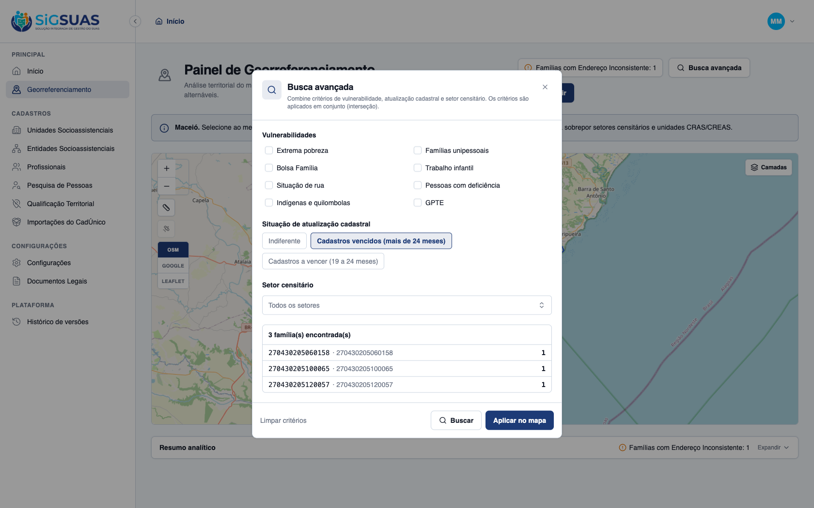
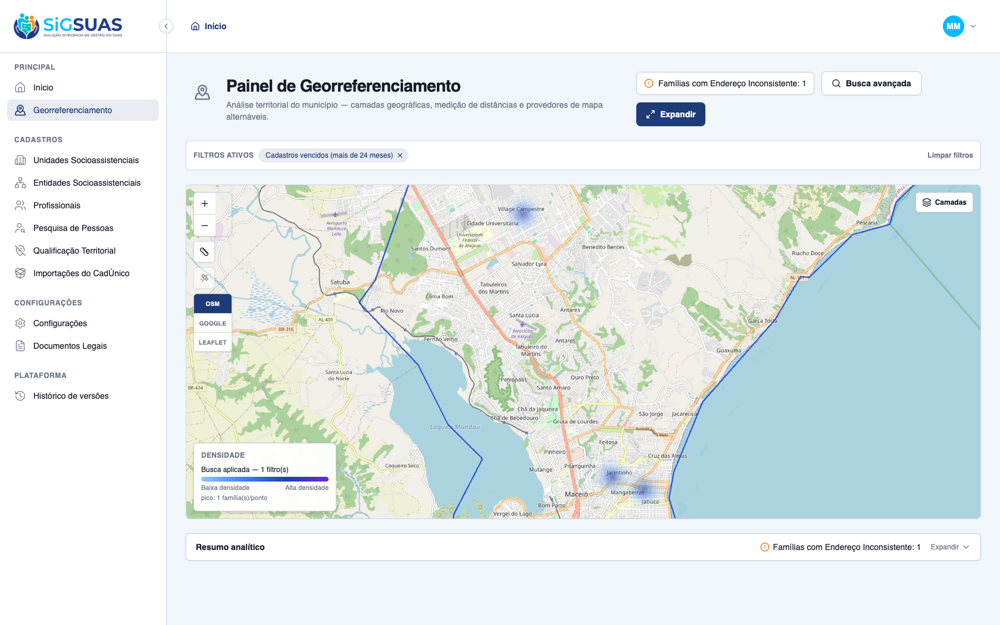

O critério de aceite da HU #9864 sobre a paleta diferenciada para alertas cadastrais foi verificado dirigindo o app real no navegador (tenant Maceió Geo, 3 famílias com cadastro vencido há mais de 24 meses) e reforçado pela suíte automatizada — ATENDIDO. CA05: ao aplicar o filtro “Cadastros vencidos (mais de 24 meses)” isoladamente (sem nenhuma vulnerabilidade social), o mapa projeta o adensamento usando a paleta de cores FRIAS dedicada (azul claro → azul → azul escuro → roxo, HEAT_PALETTE_COOL / RN05), tanto nas manchas de calor quanto na barra de legenda dinâmica — visualmente distinta da paleta quente (amarelo/vermelho) do risco social. A seleção da paleta é coberta pelo Vitest heat-palettes (fria quando o único critério efetivo é atualização cadastral; quente com ≥1 vulnerabilidade) e a classificação vencido/a-vencer pela suíte Pest (RN05, >24 e 19–24 meses).
| CA | Critério | Status |
|---|---|---|
| CA05 | Paleta diferenciada (cores frias) para atualização cadastral | ATENDIDO · navegador |
Critério (Gherkin): Dado que seleciono o filtro de "Cadastros Vencidos", Quando o mapa projeta o adensamento na tela, Então o sistema utiliza a paleta de cores frias dedicada (tons de azul escuro/roxo), diferenciando visualmente o risco de defasagem cadastral das manchas de risco social.
Como foi testado: Na Busca avançada, em Situação de atualização cadastral, selecionado Cadastros vencidos (mais de 24 meses) — sem marcar nenhuma vulnerabilidade social — e acionado Buscar → Aplicar no mapa (tenant Maceió Geo, 3 famílias com source_updated_at há mais de 24 meses).


=== frontend palette test ===
RUN v2.1.9 /Users/paulosoares/Projetos/esuas-all/client
✓ src/modules/geo-panel/heat-palettes.test.ts (12 tests) 2ms
Test Files 1 passed (1)
Tests 12 passed (12)
Start at 05:20:04
Duration 448ms (transform 23ms, setup 8ms, collect 10ms, tests 2ms, environment 248ms, prepare 47ms)
=== backend: classificação de defasagem (RN05) ===
PASS Tests\Unit\Services\Geo\GeoPanelQueryServiceTest
✓ it classifies expired as more than 24 months since source_updated_a… 0.02s
✓ it classifies expiring as between 19 and 24 months since source_upd… 0.02s
Tests: 14 passed (25 assertions)